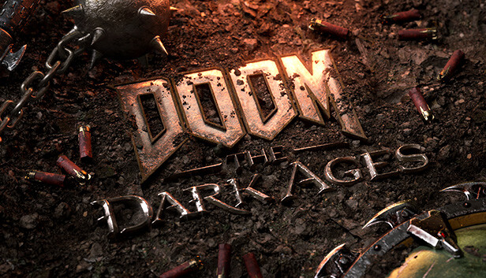
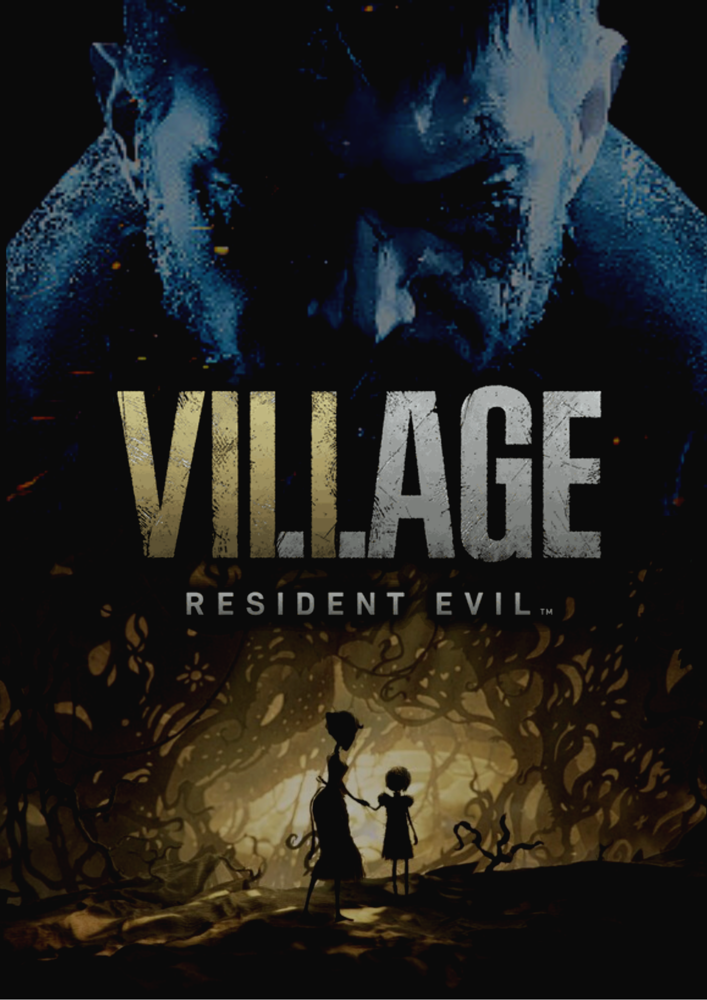

Welcome to AshenHub: Kent Villamor’s Gaming World (NISU, CICS)
Top Upcoming Games of 2025
-
DOOM: The Dark Ages
Release date: 2025
Platform(s): Xbox Series X|S, PlayStation 5 and PC
Learn More
Game Reviews
-
Red Dead Redemption 2

Rating: 9/10
Summary: Red Dead Redemption 2 is a stunningly beautiful game that immerses players in the Old West. With a deep and engaging story, it’s a must-play for fans of immersive adventures.
Learn More -
Resident Evil Village
Rating: 8/10
Summary: Resident Evil Village brings horror fans a gripping atmosphere with excellent graphics and gameplay. A great addition for long-time fans of the series.
Learn More
Gaming News
-
PlayStation 5 Shortages Expected to Continue Through 2023
The PlayStation 5 has been in high demand since its launch, and shortages are expected to continue. Sony addresses supply chain challenges as demand grows.
Learn More -
Xbox Game Pass Adds New Games in March

Xbox Game Pass subscribers can expect new additions. A great month for subscribers of the game library service.
Learn More